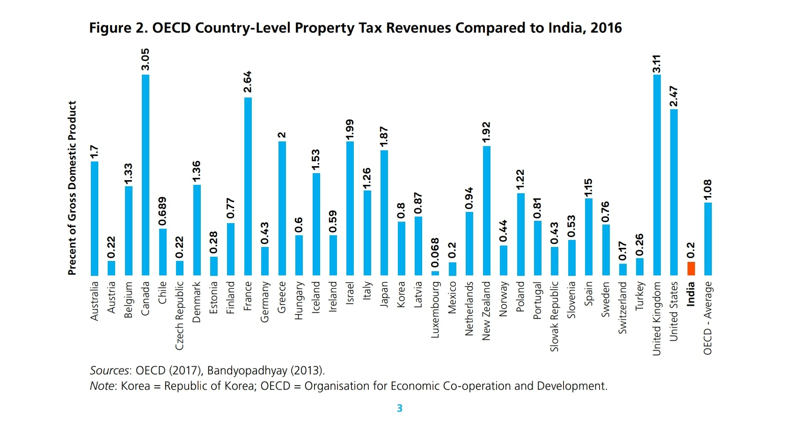

Property taxes are extremely low in India. And I think that has something (partly) to do with high property prices. Yes, I think zoning is also a contributor. Yes, I think poor enforcement of contracts leading to property owners not being able to evict renters out in some cases is also a contributor. And there may be tens or hundreds of other factors. I’ll try to discuss each in many other posts till I’m alive. But in this post I’m going to share some figures on property tax collections in India and some theories on why that might be affecting property prices.
1 Property tax revenue
The municipal corporation of Delhi collected Rs 2,417 crore, which is about 0.2% of the GDP of Delhi. This checks out the figure provided in World Bank’s discussion paper, “Property Taxation in India: Issues Impacting Revenue Performance and Suggestions for Reform.”

2 Add stamp duty and other taxes/fee
Including only property taxes might not be appropriate since India collects a significant amount of revenue from Stamp Duty too, which is levied when a property is sold. But even if we add stamp duty revenue and revenue from other taxes on property, India trails behind not only in OECD but also G20 and BRICS in terms of property tax as a % of GDP and also as a % of total taxes collected.
3 How do property taxes affect property prices
I think there are three main ways in which property taxes reduce property prices:
by reducing net cash flows to the property owner (this only reduces property prices but not value)
improving how efficiently land/property is used (this would affect value per unit income I guess)
by introducing a deadweight loss
3.1 Reducing net cash flows to property owners
It’s widely accepted/known that property taxes decrease property prices by reducing net cash flows to the property owners. This is what Dr Cameron Murray writes:
First, the price of an asset, like a home, is determined by its net cash flow. If planning regulations change the price of homes, they must do so via the price of renting, with the effect passing through to lower cashflows for the property owner, and hence lower asset prices.
Second, it is too often ignored that different property tax regimes affect the net cashflows to property owners, and hence have an enormous effect on housing asset prices. Others have noticed that this second point is often overlooked.
Here, I want to show how big this price effect can be by calculating the price reduction that would occur on a home I own in Brisbane, Australia if the property tax regime of Houston was adopted.
My home in Brisbane is worth about $1.25 million. I pay about $2,600 per year in council rates, which are a type of property tax. That’s 0.2% per year of the property value.1
The market rent for my home would be about $700 per week, say $36,000 per year, which is $33,400 after paying annual property taxes.
In Brisbane, there are stamp duties, or transaction taxes, which are 5.75% of the property value above $1 million plus $38,025, or $52,400 in total in this case.
From an ‘after-tax’ perspective, the purchaser of my home in Brisbane is paying $1,302,400 to get ownership of the property ($1.25 million to the seller and $52,400 to the state) and receives $33,400 in rental benefits per year, for an ‘after-property-taxes’ yield of 2.56%.
3.2 Improve how efficiently land is used
Property taxes also decrease property prices (at least relative to income) by increasing the efficiency with which land is used–the obligation to pay the tax kind of forces the owner to use it at some bare minimum productivity level. Property owners engage in a kind of land banking where they just buy property, don’t build anything on it or don’t rent it and just wait for the price to appreciate before they sell and cash out. I don’t think it’s a coincidence that cities in the US with the lowest property taxes have the most affordable housing as well. See housing affordability go down as you move from high property tax cities in Texas to low property tax cities in California and New York, here.
3.3 Deadweight loss
Given that property taxes are not only a tax on land but also a tax on buildings, they have a deadweight loss. And I think that also affects affordability. This would not be an issue if we had a Land Value Tax.